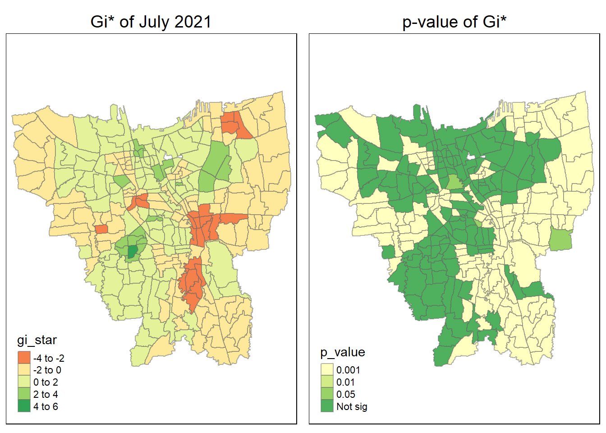
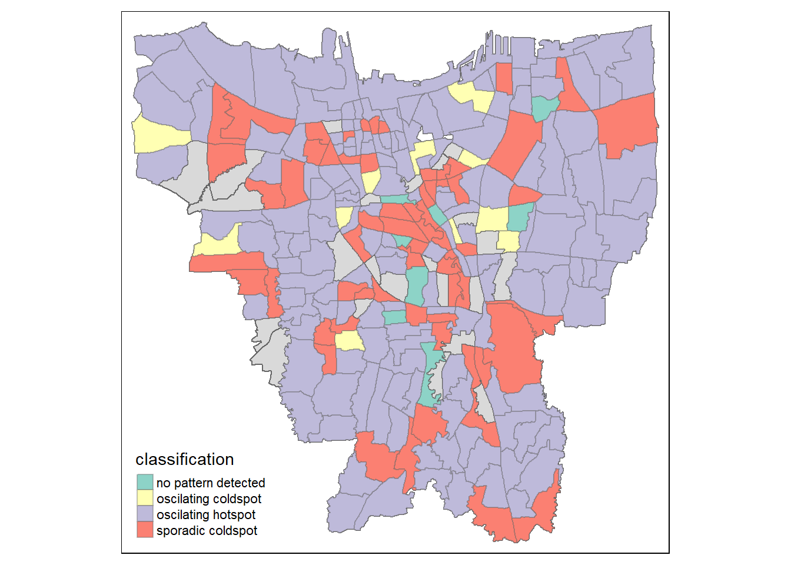

pacman::p_load(sf, tmap, sfdep, plotly, tidyverse, readxl)Take Home Exercise 2
Overview of The Task
Setting the Scene
Important
This part is taken from IS415 Take Home Exercise 2. All rights belong to Dr Kam Tin Seong.
Since late December 2019, an outbreak of a novel coronavirus disease (COVID-19; previously known as 2019-nCoV) was reported in Wuhan, China, which had subsequently affected 210 countries worldwide. In general, COVID-19 is an acute resolved disease but it can also be deadly, with a 2% case fatality rate.
The COVID-19 vaccination in Indonesia is an ongoing mass immunisation in response to the COVID-19 pandemic in Indonesia. On 13 January 2021, the program commenced when President Joko Widodo was vaccinated at the presidential palace. In terms of total doses given, Indonesia ranks third in Asia and fifth in the world.
According to wikipedia, as of 5 February 2023 at 18:00 WIB (UTC+7), 204,266,655 people had received the first dose of the vaccine and 175,131,893 people had been fully vaccinated; 69,597,474 of them had been inoculated with the booster or the third dose, while 1,585,164 had received the fourth dose. Jakarta has the highest percentage of population fully vaccinated with 103.46%, followed by Bali and Special Region of Yogyakarta with 85.45% and 83.02% respectively.
Despite its compactness, the cumulative vaccination rate are not evenly distributed within DKI Jakarta. The question is where are the sub-districts with relatively higher number of vaccination rate and how they changed over time.
Task at Hand
Note
This part is taken from IS415 Take Home Exercise 2. All rights belong to Dr Kam Tin Seong.
Choropleth Mapping and Analysis
Compute the monthly vaccination rate from July 2021 to June 2022 at sub-district (also known as kelurahan in Bahasa Indonesia) level,
Prepare the monthly vaccination rate maps by using appropriate tmap functions,
Describe the spatial patterns revealed by the choropleth maps (not more than 200 words).
Local Gi* Analysis
With reference to the vaccination rate maps prepared in ESDA:
Compute local Gi* values of the monthly vaccination rate,
Display the Gi* maps of the monthly vaccination rate. The maps should only display the significant (i.e. p-value < 0.05)
With reference to the analysis results, draw statistical conclusions (not more than 250 words).
Emerging Hot Spot Analysis (EHSA)
With reference to the local Gi* values of the vaccination rate maps prepared in the previous section:
Perform Mann-Kendall Test by using the spatio-temporal local Gi* values,
Select three sub-districts and describe the temporal trends revealed (not more than 250 words), and
Prepared a EHSA map of the Gi* values of vaccination rate. The maps should only display the significant (i.e. p-value < 0.05).
With reference to the EHSA map prepared, describe the spatial patterns revelaed. (not more than 250 words).
Loading the R Packages
Before we start our analysis, we will be making loading all the necessary R Packages. Almost all the packages are similar to those found in Take Home Exercise 1. You can refer to that for more information on what each of the package does.
One special package that is different would be the readxl library that we have install. Tidyverse does not have any core package to read excel file, hence there is a need to install this library in order for us to see the data. You can read more about readxl here.
The Data
Getting the Data
In this Take Home Exercise, the main dataset we will be using would be indicated here:
Aspatial Data: We will be making use of the data from Riwayat File Vaksinasi DKI Jakarta. This website the vaccination data set for Jakarta. Based on the task, I have downloaded the data set from the month of July 2021 to June 2022. For this analysis, I have decided to pick the 1st Day of the Month.
Geospatial Data: We will be making use of the DKI Jakarta administration boundary from 2019 in this case. The data can be found here.
Analyzing the Data
Aspatial Data
Now that we have gotten the data set, lets take a look at the data set. We will start off by loading the dataset from month of July 2021 first.
July_2021 <- read_excel("data/aspatial/Data Vaksinasi Berbasis Kelurahan (01 Juli 2021).xlsx")July_2021# A tibble: 268 × 21
KODE KELURA…¹ WILAY…² KECAM…³ KELUR…⁴ SASARAN BELUM…⁵ JUMLA…⁶ JUMLA…⁷ TOTAL…⁸
<chr> <chr> <chr> <chr> <dbl> <dbl> <dbl> <dbl> <dbl>
1 <NA> <NA> <NA> TOTAL 7739060 5041111 2696017 1181740 3877757
2 3172051003 JAKART… PADEMA… ANCOL 20393 13272 7114 3287 10401
3 3173041007 JAKART… TAMBORA ANGKE 25785 16477 9299 3221 12520
4 3175041005 JAKART… KRAMAT… BALE K… 25158 18849 6301 2644 8945
5 3175031003 JAKART… JATINE… BALI M… 8683 5743 2937 1517 4454
6 3175101006 JAKART… CIPAYU… BAMBU … 22768 15407 7357 3985 11342
7 3174031002 JAKART… MAMPAN… BANGKA 18930 12503 6421 2704 9125
8 3175051002 JAKART… PASAR … BARU 20267 11268 8982 4674 13656
9 3175041004 JAKART… KRAMAT… BATU A… 41389 30358 11020 5254 16274
10 3171071002 JAKART… TANAH … BENDUN… 19008 11502 7499 3566 11065
# … with 258 more rows, 12 more variables: `LANSIA\r\nDOSIS 1` <dbl>,
# `LANSIA\r\nDOSIS 2` <dbl>, `LANSIA TOTAL \r\nVAKSIN DIBERIKAN` <dbl>,
# `PELAYAN PUBLIK\r\nDOSIS 1` <dbl>, `PELAYAN PUBLIK\r\nDOSIS 2` <dbl>,
# `PELAYAN PUBLIK TOTAL\r\nVAKSIN DIBERIKAN` <dbl>,
# `GOTONG ROYONG\r\nDOSIS 1` <dbl>, `GOTONG ROYONG\r\nDOSIS 2` <dbl>,
# `GOTONG ROYONG TOTAL\r\nVAKSIN DIBERIKAN` <dbl>,
# `TENAGA KESEHATAN\r\nDOSIS 1` <dbl>, `TENAGA KESEHATAN\r\nDOSIS 2` <dbl>, …Based on what we can see, we have noticed that the data set is written in Indonesian. In this exercise, I am only interested in the first 6 columns, of which a rough translation of what each columns means is given in the table below.
| Indonesian Name | Rough Translation |
|---|---|
| KODE KELURAHAN | Village Code |
| WILAYAH KOTA | City Area (ADM2) |
| KECAMATAN | District (ADM3) |
| KELURAHAN | Urban Village |
| SASARAN | Target |
| BELUM VAKSIN | Not Vaccinated |
Furthermore, note that there is actually a row in the data frame that provides only the total count, we would need to drop the row as well. I have check through the rest of the data set and found that they are all in the same format as above, as such we can perform the same code for all the data.
The Code Chunk below show how we can perform all the filtering and the removal of the first row in a single code chunk
July_2021 <- read_excel("data/aspatial/Data Vaksinasi Berbasis Kelurahan (01 Juli 2021).xlsx") %>%
select(0:6) %>%
filter(!row_number() %in% c(1))We can then verify that it has been removed already.
July_2021# A tibble: 267 × 6
`KODE KELURAHAN` `WILAYAH KOTA` KECAMATAN KELURAHAN SASARAN BELUM…¹
<chr> <chr> <chr> <chr> <dbl> <dbl>
1 3172051003 JAKARTA UTARA PADEMANGAN ANCOL 20393 13272
2 3173041007 JAKARTA BARAT TAMBORA ANGKE 25785 16477
3 3175041005 JAKARTA TIMUR KRAMAT JATI BALE KAMBA… 25158 18849
4 3175031003 JAKARTA TIMUR JATINEGARA BALI MESTER 8683 5743
5 3175101006 JAKARTA TIMUR CIPAYUNG BAMBU APUS 22768 15407
6 3174031002 JAKARTA SELATAN MAMPANG PRAPATAN BANGKA 18930 12503
7 3175051002 JAKARTA TIMUR PASAR REBO BARU 20267 11268
8 3175041004 JAKARTA TIMUR KRAMAT JATI BATU AMPAR 41389 30358
9 3171071002 JAKARTA PUSAT TANAH ABANG BENDUNGAN … 19008 11502
10 3175031002 JAKARTA TIMUR JATINEGARA BIDARA CINA 32331 23395
# … with 257 more rows, and abbreviated variable name ¹`BELUM VAKSIN`Geospatial Data
Now that we had taken a look at the Aspatial Data, we can take a look at the Geospatial Data.
We will import the Jakarta into a sf data frame with the code chunk below. In order to ensure that the spatial data is accurate, we would need to use the apply the correct crs information to the sf data frame through st_transform. As we are focusing on Jakarta, the CRS code is 23845. Find out more about Indonesia CRS here.
Jakarta_Area <- st_read(dsn = "data/geospatial",
layer = "BATAS_DESA_DESEMBER_2019_DUKCAPIL_DKI_JAKARTA") %>%
st_transform(crs = 23845)Reading layer `BATAS_DESA_DESEMBER_2019_DUKCAPIL_DKI_JAKARTA' from data source
`C:\hxchen-2019\birdie\lessons\Take-home\Take-home_ex2\data\geospatial'
using driver `ESRI Shapefile'
Simple feature collection with 269 features and 161 fields
Geometry type: MULTIPOLYGON
Dimension: XY
Bounding box: xmin: 106.3831 ymin: -6.370815 xmax: 106.9728 ymax: -5.184322
Geodetic CRS: WGS 84Lets take a look at the data frame first. One thing you have noted is that there is a total of 162 columns in the sf data frame, and most of which is redundant in our current analysis. In this case, we are only interested in the first 9 columns of the sf data frame. The details of the data frame is as provided below:
| Column Name | Rough Translation |
|---|---|
| OBJECT_ID | object id |
| KODE_DESA | Village Code |
| DESA | Village - Similar to Urban Village |
| KODE | Code |
| PROVINSI | Province |
| KAB_KOTA | City District (ADM2) - Similar to City Area |
| KECAMATAN | District (ADM3) |
| DESA_KELAR | Village |
| JUMLAH_PEN | Populations |
Another important point to note is that while our Vaccination Data Frame only has 267 observations as compared to our sf data frame having 269 observations, this would mean that there is 2 extra areas in the sf data frame that we need to handle.
Upon closer look at the data, we found out that there are 2 areas in the sf data frame that has no data, those areas are:
DANAU SUNTER
DANAU SUNTER DLL
We could just drops the rows as they have no meaningful data, but we might want to take a look more closely first. To solve the issue first we will extract filter the relevant data from the sf data set first, through the code chunk below.
Jakarta_Area <- st_read(dsn = "data/geospatial",
layer = "BATAS_DESA_DESEMBER_2019_DUKCAPIL_DKI_JAKARTA") %>%
select(0:9)Reading layer `BATAS_DESA_DESEMBER_2019_DUKCAPIL_DKI_JAKARTA' from data source
`C:\hxchen-2019\birdie\lessons\Take-home\Take-home_ex2\data\geospatial'
using driver `ESRI Shapefile'
Simple feature collection with 269 features and 161 fields
Geometry type: MULTIPOLYGON
Dimension: XY
Bounding box: xmin: 106.3831 ymin: -6.370815 xmax: 106.9728 ymax: -5.184322
Geodetic CRS: WGS 84We will then perform a left join on this both of the data frame in order to find out which rows has empty data. We will make use of DESA and KELURAHAN as the common identifier.
jakarta_07_2021 <- left_join(Jakarta_Area, July_2021,
by = c("DESA" = "KELURAHAN"))Once we join the data we have notice that that are 4 different rows with NA columns, 2 of them are expected, but the other 2 are a surprised:
DANAU SUNTER
DANAU SUNTER DLL
JATIPULO
KRENDANG
I went to take a look at the data for the vaccination table and compare the results, and found that there is a slight difference in the name. The Jakarta sf Data frame record JATI PULO as JATIPULO, while for KERENDANG, it was recorded as KRENDANG instead.
There are 2 options to solve this issue. I can replace the name of the those two, but I choose to use the KODE_DESA and KODE KELURAHAN instead.
jakarta_07_2021 <- left_join(Jakarta_Area, July_2021,
by = c("KODE_DESA" = "KODE KELURAHAN"))When we look at the data, we spotted 2 different rows with NA.
DANAU SUNTER
DANAU SUNTER DLL
We can confirm that we can drop the columns already. We can perform the step with the code chunk below.
jakarta_07_2021 <- jakarta_07_2021 %>% drop_na()Just to give us a piece of mind, lets plot out the border
tm_shape(jakarta_07_2021)+
tm_borders(alpha = 0.5) +
tm_scale_bar() +
tm_grid(alpha =0.2)Looking at the map, notice how the map includes all the outer islands. This is not what this exercise is about as such we would need to remove all those data points.
I have identified that all the outer islands belong district KEPULAUAN SERIBU. All we need to do is to filter out the data.
jakarta_07_2021_removed <- jakarta_07_2021 %>%
drop_na() %>%
filter(KAB_KOTA != "KEPULAUAN SERIBU")We can plot again to make sure that we are correct.
tm_shape(jakarta_07_2021_removed)+
tm_borders(alpha = 0.5) +
tm_scale_bar() +
tm_grid(alpha =0.2)Calculating the Vaccination Rate
Danger
Note that in this case we are using the Target as the vaccination rate as it is a better representative values of the vaccination rate. This is because COVID 19 vaccine is given in 2 doses, it is possible that that the targeted will be greater than the population of Jakarta.
Now that we have cleaned up the data we would need to map out the Monthly Vaccination Rate.
To Calculate Vaccination Rate, we would need to make some calculation as the vaccination data frame does not provide the vaccination rate directly, what was given however, is the amount of people not vaccination and the target vaccination. In this case we can use the formula:
Vaccination Rate = (Target - Not Vaccinated) / Target
We will be performing this calculation on the vaccination data frame. The code chunk below shows calculation of the vaccination rate into a new column
vaccinated_july <- July_2021 %>%
mutate(vaccinated_rate = (`SASARAN` - `BELUM VAKSIN`)/`SASARAN`)Now we can take a look at the data.
vaccinated_july# A tibble: 267 × 7
`KODE KELURAHAN` `WILAYAH KOTA` KECAMATAN KELUR…¹ SASARAN BELUM…² vacci…³
<chr> <chr> <chr> <chr> <dbl> <dbl> <dbl>
1 3172051003 JAKARTA UTARA PADEMANGAN ANCOL 20393 13272 0.349
2 3173041007 JAKARTA BARAT TAMBORA ANGKE 25785 16477 0.361
3 3175041005 JAKARTA TIMUR KRAMAT JATI BALE K… 25158 18849 0.251
4 3175031003 JAKARTA TIMUR JATINEGARA BALI M… 8683 5743 0.339
5 3175101006 JAKARTA TIMUR CIPAYUNG BAMBU … 22768 15407 0.323
6 3174031002 JAKARTA SELATAN MAMPANG PRA… BANGKA 18930 12503 0.340
7 3175051002 JAKARTA TIMUR PASAR REBO BARU 20267 11268 0.444
8 3175041004 JAKARTA TIMUR KRAMAT JATI BATU A… 41389 30358 0.267
9 3171071002 JAKARTA PUSAT TANAH ABANG BENDUN… 19008 11502 0.395
10 3175031002 JAKARTA TIMUR JATINEGARA BIDARA… 32331 23395 0.276
# … with 257 more rows, and abbreviated variable names ¹KELURAHAN,
# ²`BELUM VAKSIN`, ³vaccinated_rateNotice that we have created a new column with the Vaccination Rate of the Month. With all that done we can perform our Task.
Data Wrangling
Now that we have analyse the data we could perform our task.
Importing Aspatial Data
There is 12 datasets to be imported and we will be importing all of them in the code chunk below. At the same time we will also be filtering out the first row and selecting the relevant columns.
Note
For the March Data, the data from the website reference 2 March instead.
july_2021 <- read_excel("data/aspatial/Data Vaksinasi Berbasis Kelurahan (01 Juli 2021).xlsx") %>%
select(0:6) %>%
filter(!row_number() %in% c(1))
aug_2021 <- read_excel("data/aspatial/Data Vaksinasi Berbasis Kelurahan (1 Agustus 2021).xlsx") %>%
select(0:6) %>%
filter(!row_number() %in% c(1))
sept_2021 <- read_excel("data/aspatial/Data Vaksinasi Berbasis Kelurahan (01 September 2021).xlsx") %>%
select(0:6) %>%
filter(!row_number() %in% c(1))
oct_2021 <- read_excel("data/aspatial/Data Vaksinasi Berbasis Kelurahan (01 Oktober 2021).xlsx") %>%
select(0:6) %>%
filter(!row_number() %in% c(1))
nov_2021 <- read_excel("data/aspatial/Data Vaksinasi Berbasis Kelurahan (01 November 2021).xlsx") %>%
select(0:6) %>%
filter(!row_number() %in% c(1))
dec_2021 <- read_excel("data/aspatial/Data Vaksinasi Berbasis Kelurahan (01 Desember 2021).xlsx") %>%
select(0:6) %>%
filter(!row_number() %in% c(1))
jan_2022 <- read_excel("data/aspatial/Data Vaksinasi Berbasis Kelurahan (01 Januari 2022).xlsx") %>%
select(0:6) %>%
filter(!row_number() %in% c(1))
feb_2022 <- read_excel("data/aspatial/Data Vaksinasi Berbasis Kelurahan (01 Februari 2022).xlsx") %>%
select(0:6) %>%
filter(!row_number() %in% c(1))
mar_2022 <- read_excel("data/aspatial/Data Vaksinasi Berbasis Kelurahan (02 Maret 2022).xlsx") %>%
select(0:6) %>%
filter(!row_number() %in% c(1))
apr_2022 <- read_excel("data/aspatial/Data Vaksinasi Berbasis Kelurahan (01 April 2022).xlsx") %>%
select(0:6) %>%
filter(!row_number() %in% c(1))
may_2022 <- read_excel("data/aspatial/Data Vaksinasi Berbasis Kelurahan (01 Mei 2022).xlsx") %>%
select(0:6) %>%
filter(!row_number() %in% c(1))
jun_2022 <- read_excel("data/aspatial/Data Vaksinasi Berbasis Kelurahan (01 Juni 2022).xlsx") %>%
select(0:6) %>%
filter(!row_number() %in% c(1))Calculating Vaccination Rate
Now we will be calculating the Monthly vaccination rate for each of the months. We will append the calculated rate to the end of the data frame.
vaccinated_july <- july_2021 %>%
mutate(vaccinated_rate = (`SASARAN` - `BELUM VAKSIN`)/`SASARAN`)
vaccinated_aug <- aug_2021 %>%
mutate(vaccinated_rate = (`SASARAN` - `BELUM VAKSIN`)/`SASARAN`)
vaccinated_sept <- sept_2021 %>%
mutate(vaccinated_rate = (`SASARAN` - `BELUM VAKSIN`)/`SASARAN`)
vaccinated_oct <- oct_2021 %>%
mutate(vaccinated_rate = (`SASARAN` - `BELUM VAKSIN`)/`SASARAN`)
vaccinated_nov <- nov_2021 %>%
mutate(vaccinated_rate = (`SASARAN` - `BELUM VAKSIN`)/`SASARAN`)
vaccinated_dec <- dec_2021 %>%
mutate(vaccinated_rate = (`SASARAN` - `BELUM VAKSIN`)/`SASARAN`)
vaccinated_jan <- jan_2022 %>%
mutate(vaccinated_rate = (`SASARAN` - `BELUM VAKSIN`)/`SASARAN`)
vaccinated_feb <- feb_2022 %>%
mutate(vaccinated_rate = (`SASARAN` - `BELUM VAKSIN`)/`SASARAN`)
vaccinated_mar <- mar_2022 %>%
mutate(vaccinated_rate = (`SASARAN` - `BELUM VAKSIN`)/`SASARAN`)
vaccinated_apr <- apr_2022 %>%
mutate(vaccinated_rate = (`SASARAN` - `BELUM VAKSIN`)/`SASARAN`)
vaccinated_may <- may_2022 %>%
mutate(vaccinated_rate = (`SASARAN` - `BELUM VAKSIN`)/`SASARAN`)
vaccinated_jun <- jun_2022 %>%
mutate(vaccinated_rate = (`SASARAN` - `BELUM VAKSIN`)/`SASARAN`)Importing Geospatial Data
Now that we have finish calculating the vaccination rate, we can now import the sf data frame.
In the code chunk below, we will be filtering the relevant columns. We will also be removing the 2 outer islands with NA in the rows. We also will be applying st_transform() to transform the data into the correct coordinate system.
jakarta_sf <- st_read(dsn = "data/geospatial",
layer = "BATAS_DESA_DESEMBER_2019_DUKCAPIL_DKI_JAKARTA") %>%
select(0:9) %>%
drop_na() %>%
filter(KAB_KOTA != "KEPULAUAN SERIBU") %>%
st_transform(crs = 23845)Reading layer `BATAS_DESA_DESEMBER_2019_DUKCAPIL_DKI_JAKARTA' from data source
`C:\hxchen-2019\birdie\lessons\Take-home\Take-home_ex2\data\geospatial'
using driver `ESRI Shapefile'
Simple feature collection with 269 features and 161 fields
Geometry type: MULTIPOLYGON
Dimension: XY
Bounding box: xmin: 106.3831 ymin: -6.370815 xmax: 106.9728 ymax: -5.184322
Geodetic CRS: WGS 84Merging the SF data frame
Now that we can do that we can now perform the merging of the sf data frame with the vaccination data frame. We will be joining by KODE_DESA and KODE KELURAHAN for simplicity.
jakarta_july <- left_join(jakarta_sf, vaccinated_july,
by = c("KODE_DESA" = "KODE KELURAHAN"))
jakarta_aug <- left_join(jakarta_sf, vaccinated_aug,
by = c("KODE_DESA" = "KODE KELURAHAN"))
jakarta_sept <- left_join(jakarta_sf, vaccinated_sept,
by = c("KODE_DESA" = "KODE KELURAHAN"))
jakarta_oct <- left_join(jakarta_sf, vaccinated_oct,
by = c("KODE_DESA" = "KODE KELURAHAN"))
jakarta_nov <- left_join(jakarta_sf, vaccinated_nov,
by = c("KODE_DESA" = "KODE KELURAHAN"))
jakarta_dec <- left_join(jakarta_sf, vaccinated_dec,
by = c("KODE_DESA" = "KODE KELURAHAN"))
jakarta_jan <- left_join(jakarta_sf, vaccinated_jan,
by = c("KODE_DESA" = "KODE KELURAHAN"))
jakarta_feb <- left_join(jakarta_sf, vaccinated_feb,
by = c("KODE_DESA" = "KODE KELURAHAN"))
jakarta_mar <- left_join(jakarta_sf, vaccinated_mar,
by = c("KODE_DESA" = "KODE KELURAHAN"))
jakarta_apr <- left_join(jakarta_sf, vaccinated_apr,
by = c("KODE_DESA" = "KODE KELURAHAN"))
jakarta_may <- left_join(jakarta_sf, vaccinated_may,
by = c("KODE_DESA" = "KODE KELURAHAN"))
jakarta_jun <- left_join(jakarta_sf, vaccinated_jun,
by = c("KODE_DESA" = "KODE KELURAHAN"))Plotting Choropleth Map
Now that we have all the data we can now plot the Choropleth Map. To map the choropleth in tmap we will need to make use of the tm_fill() function from tmaps. One thing to note is that we are able to determine the style of data classification methods and the number of bins as well. Find out more about tm_fill() here.
Choropleth Maps July 2021 to June 2022
Note
We will be setting the style of classification into “quantile” and setting the bins to 5.
July 2021
july_choro <- tm_shape(jakarta_july)+
tm_fill("vaccinated_rate",
style = "quantile",
palette = "Blues",
n = 5,
title = "Vaccination Rate") +
tm_layout(main.title = "Jakarta Vaccination Rate July 2021",
main.title.position = "center",
main.title.size = 1.2,
legend.height = 0.45,
legend.width = 0.35,
frame = TRUE) +
tm_borders(alpha = 0.5)
july_choroAugust 2021
aug_choro <- tm_shape(jakarta_aug)+
tm_fill("vaccinated_rate",
style = "quantile",
palette = "Blues",
n = 5,
title = "Vaccination Rate") +
tm_layout(main.title = "Jakarta Vaccination Rate Aug 2021",
main.title.position = "center",
main.title.size = 1.2,
legend.height = 0.45,
legend.width = 0.35,
frame = TRUE) +
tm_borders(alpha = 0.5)
aug_choroSeptember 2021
sept_choro <- tm_shape(jakarta_sept)+
tm_fill("vaccinated_rate",
style = "quantile",
palette = "Blues",
n = 5,
title = "Vaccination Rate") +
tm_layout(main.title = "Jakarta Vaccination Rate Sept 2021",
main.title.position = "center",
main.title.size = 1.2,
legend.height = 0.45,
legend.width = 0.35,
frame = TRUE) +
tm_borders(alpha = 0.5)
sept_choroOctober 2021
oct_choro <- tm_shape(jakarta_oct)+
tm_fill("vaccinated_rate",
style = "quantile",
palette = "Blues",
n = 5,
title = "Vaccination Rate") +
tm_layout(main.title = "Jakarta Vaccination Rate Oct 2021",
main.title.position = "center",
main.title.size = 1.2,
legend.height = 0.45,
legend.width = 0.35,
frame = TRUE) +
tm_borders(alpha = 0.5)
oct_choroNovember 2021
nov_choro <- tm_shape(jakarta_nov)+
tm_fill("vaccinated_rate",
style = "quantile",
palette = "Blues",
n = 5,
title = "Vaccination Rate") +
tm_layout(main.title = "Jakarta Vaccination Rate Nov 2021",
main.title.position = "center",
main.title.size = 1.2,
legend.height = 0.45,
legend.width = 0.35,
frame = TRUE) +
tm_borders(alpha = 0.5)
nov_choroDecember 2021
dec_choro <- tm_shape(jakarta_dec)+
tm_fill("vaccinated_rate",
style = "quantile",
palette = "Blues",
n = 5,
title = "Vaccination Rate") +
tm_layout(main.title = "Jakarta Vaccination Rate Dec 2021",
main.title.position = "center",
main.title.size = 1.2,
legend.height = 0.45,
legend.width = 0.35,
frame = TRUE) +
tm_borders(alpha = 0.5)
dec_choro
January 2022
jan_choro <- tm_shape(jakarta_jan)+
tm_fill("vaccinated_rate",
style = "quantile",
palette = "Blues",
n = 5,
title = "Vaccination Rate") +
tm_layout(main.title = "Jakarta Vaccination Rate Jan 2022",
main.title.position = "center",
main.title.size = 1.2,
legend.height = 0.45,
legend.width = 0.35,
frame = TRUE) +
tm_borders(alpha = 0.5)
jan_choroFebruary 2022
feb_choro <- tm_shape(jakarta_feb)+
tm_fill("vaccinated_rate",
style = "quantile",
palette = "Blues",
n = 5,
title = "Vaccination Rate") +
tm_layout(main.title = "Jakarta Vaccination Rate Feb 2022",
main.title.position = "center",
main.title.size = 1.2,
legend.height = 0.45,
legend.width = 0.35,
frame = TRUE) +
tm_borders(alpha = 0.5) +
tm_grid(alpha =0.2)
feb_choroMarch 2022
mar_choro <- tm_shape(jakarta_mar)+
tm_fill("vaccinated_rate",
style = "quantile",
palette = "Blues",
n = 5,
title = "Vaccination Rate") +
tm_layout(main.title = "Jakarta Vaccination Rate Mar 2022",
main.title.position = "center",
main.title.size = 1.2,
legend.height = 0.45,
legend.width = 0.35,
frame = TRUE) +
tm_borders(alpha = 0.5)
mar_choroApril 2022
apr_choro <- tm_shape(jakarta_apr)+
tm_fill("vaccinated_rate",
style = "quantile",
palette = "Blues",
n = 5,
title = "Vaccination Rate") +
tm_layout(main.title = "Jakarta Vaccination Rate Apr 2022",
main.title.position = "center",
main.title.size = 1.2,
legend.height = 0.45,
legend.width = 0.35,
frame = TRUE) +
tm_borders(alpha = 0.5)
apr_choroMay 2022
may_choro <- tm_shape(jakarta_may)+
tm_fill("vaccinated_rate",
style = "quantile",
palette = "Blues",
n = 5,
title = "Vaccination Rate") +
tm_layout(main.title = "Jakarta Vaccination Rate May 2022",
main.title.position = "center",
main.title.size = 1.2,
legend.height = 0.45,
legend.width = 0.35,
frame = TRUE) +
tm_borders(alpha = 0.5)
may_choroJune 2022
june_choro <- tm_shape(jakarta_jun)+
tm_fill("vaccinated_rate",
style = "quantile",
palette = "Blues",
n = 5,
title = "Vaccination Rate") +
tm_layout(main.title = "Jakarta Vaccination Rate Jun 2022",
main.title.position = "center",
main.title.size = 1.2,
legend.height = 0.45,
legend.width = 0.35,
frame = TRUE) +
tm_borders(alpha = 0.5)
june_choroAnalysis of Choropleth Map
To make things easier for us to analyse, we will be arranging the maps into a grid of maps for us to see the pattern better.
tmap_arrange(july_choro, aug_choro, asp = 1, ncol=2)tmap_arrange(sept_choro, oct_choro, asp = 1, ncol=2)tmap_arrange(nov_choro, dec_choro, asp = 1, ncol=2)tmap_arrange(jan_choro, feb_choro, asp = 1, ncol=2)tmap_arrange(mar_choro, apr_choro, asp = 1, ncol=2)tmap_arrange(may_choro, june_choro, asp = 1, ncol=2)
Important
Based on the choropleths map plotted for the region of Jakarta, one pattern that was reviewed was that throughout the study period, the monthly vaccination rate of the entire region increases. The Monthly vaccination rate increases sharply up till the month of December before it slowed down significantly. Overall the vaccination rate throughout the region of Jakarta increases with the minimum rate increasing from 0.227 to 0781.
However, one thing to note is the rate of change of vaccination rate differs significantly for each sub district. A district can fluctuate between upper quantile and the lower quantile throughout the period. This can be seen from the 2 district in the north-western region having the highest vaccination rates, but progress to a lower quantile throughout the month. The districts located at the south of Jakarta and a few districts near the north-east remains largely stable at the highest quantile throughout the period.
Computing Local Gi* Analysis
In this section, I will aim to compute the local Gi* Analysis. To do so, the first step that I need to perform would be to derive the contiguity weights.
Step 1: Deriving contiguity weights.
Before we calculate the Local Gi* Analysis, we would need to calculate the contiguity weights. This can be done with the code chunk below. The code chunk add 2 new columns, one of which is the idenitify nearest neighbors and the contain the weights matrix.
We will make use of the following functions from sfdep package:
st_contiguity(): Identify the nearest neighbors. Find out more here.
st_inverse_distance(): Calculate the inverse distance weighs. Find out more about here.
The code chunk below will compute the weight matrix for all the months:
wm_jul <- jakarta_july %>%
mutate(nb = st_contiguity(geometry),
wts = st_inverse_distance(nb, geometry,
scale = 1,
alpha = 1),
.before = 1)! Polygon provided. Using point on surface.wm_aug <- jakarta_aug %>%
mutate(nb = st_contiguity(geometry),
wts = st_inverse_distance(nb, geometry,
scale = 1,
alpha = 1),
.before = 1)! Polygon provided. Using point on surface.wm_sept <- jakarta_sept %>%
mutate(nb = st_contiguity(geometry),
wts = st_inverse_distance(nb, geometry,
scale = 1,
alpha = 1),
.before = 1)! Polygon provided. Using point on surface.wm_oct <- jakarta_oct %>%
mutate(nb = st_contiguity(geometry),
wts = st_inverse_distance(nb, geometry,
scale = 1,
alpha = 1),
.before = 1)! Polygon provided. Using point on surface.wm_nov <- jakarta_nov %>%
mutate(nb = st_contiguity(geometry),
wts = st_inverse_distance(nb, geometry,
scale = 1,
alpha = 1),
.before = 1)! Polygon provided. Using point on surface.wm_dec <- jakarta_dec %>%
mutate(nb = st_contiguity(geometry),
wts = st_inverse_distance(nb, geometry,
scale = 1,
alpha = 1),
.before = 1)! Polygon provided. Using point on surface.wm_jan <- jakarta_jan %>%
mutate(nb = st_contiguity(geometry),
wts = st_inverse_distance(nb, geometry,
scale = 1,
alpha = 1),
.before = 1)! Polygon provided. Using point on surface.wm_feb <- jakarta_feb %>%
mutate(nb = st_contiguity(geometry),
wts = st_inverse_distance(nb, geometry,
scale = 1,
alpha = 1),
.before = 1)! Polygon provided. Using point on surface.wm_mar <- jakarta_mar %>%
mutate(nb = st_contiguity(geometry),
wts = st_inverse_distance(nb, geometry,
scale = 1,
alpha = 1),
.before = 1)! Polygon provided. Using point on surface.wm_apr <- jakarta_apr %>%
mutate(nb = st_contiguity(geometry),
wts = st_inverse_distance(nb, geometry,
scale = 1,
alpha = 1),
.before = 1)! Polygon provided. Using point on surface.wm_may <- jakarta_may %>%
mutate(nb = st_contiguity(geometry),
wts = st_inverse_distance(nb, geometry,
scale = 1,
alpha = 1),
.before = 1)! Polygon provided. Using point on surface.wm_jun <- jakarta_jun %>%
mutate(nb = st_contiguity(geometry),
wts = st_inverse_distance(nb, geometry,
scale = 1,
alpha = 1),
.before = 1)! Polygon provided. Using point on surface.Step 2: Calculating Gi* Statistic
Now that we have the computed the weights of each for each of the vaccination rate, we can calculate the local Gi* as well. In this step, we will be performing a monte carlo simulation on the values as well.
We will be making use of the following function from the sfdep package:
- local_gstar_perm(): Calculate the Gi* values with simulation. It takes the target variable, nearest neighbor and weight matrix and the number of simulation. Find out more here.
The code chunk below will compute the weight matrix for all the months:
HCSA_jul <- wm_jul %>%
mutate(local_Gi = local_gstar_perm(
vaccinated_rate, nb, wt, nsim = 99),
.before = 1) %>%
unnest(local_Gi)
HCSA_aug <- wm_aug %>%
mutate(local_Gi = local_gstar_perm(
vaccinated_rate, nb, wt, nsim = 99),
.before = 1) %>%
unnest(local_Gi)
HCSA_sept <- wm_sept %>%
mutate(local_Gi = local_gstar_perm(
vaccinated_rate, nb, wt, nsim = 99),
.before = 1) %>%
unnest(local_Gi)
HCSA_oct <- wm_oct %>%
mutate(local_Gi = local_gstar_perm(
vaccinated_rate, nb, wt, nsim = 99),
.before = 1) %>%
unnest(local_Gi)
HCSA_nov <- wm_nov %>%
mutate(local_Gi = local_gstar_perm(
vaccinated_rate, nb, wt, nsim = 99),
.before = 1) %>%
unnest(local_Gi)
HCSA_dec <- wm_dec %>%
mutate(local_Gi = local_gstar_perm(
vaccinated_rate, nb, wt, nsim = 99),
.before = 1) %>%
unnest(local_Gi)
HCSA_jan <- wm_jan %>%
mutate(local_Gi = local_gstar_perm(
vaccinated_rate, nb, wt, nsim = 99),
.before = 1) %>%
unnest(local_Gi)
HCSA_feb <- wm_feb %>%
mutate(local_Gi = local_gstar_perm(
vaccinated_rate, nb, wt, nsim = 99),
.before = 1) %>%
unnest(local_Gi)
HCSA_mar <- wm_mar %>%
mutate(local_Gi = local_gstar_perm(
vaccinated_rate, nb, wt, nsim = 99),
.before = 1) %>%
unnest(local_Gi)
HCSA_apr <- wm_apr %>%
mutate(local_Gi = local_gstar_perm(
vaccinated_rate, nb, wt, nsim = 99),
.before = 1) %>%
unnest(local_Gi)
HCSA_may <- wm_may %>%
mutate(local_Gi = local_gstar_perm(
vaccinated_rate, nb, wt, nsim = 99),
.before = 1) %>%
unnest(local_Gi)
HCSA_jun <- wm_jun %>%
mutate(local_Gi = local_gstar_perm(
vaccinated_rate, nb, wt, nsim = 99),
.before = 1) %>%
unnest(local_Gi)Step 3: Visualization Gi*
Now that we have calculated the Gi* values we can visualize it
Looking at the Visualisation
map1 <- tm_shape(HCSA_jul)+
tm_fill("gi_star")+
tm_layout(main.title = "Gi* of July 2021",
main.title.position = "center",
main.title.size = 1.2,
legend.height = 0.45,
legend.width = 0.35,
frame = TRUE) +
tm_borders(alpha = 0.5)
map1Variable(s) "gi_star" contains positive and negative values, so midpoint is set to 0. Set midpoint = NA to show the full spectrum of the color palette.Just looking at the map above does not seems to indicate, but that is not enough for us to make a conclusion. We would need to compare it with the p-value. Lets compare it with the p-value map
p_map <- tm_shape(HCSA_jul)+
tm_fill("p_value",
breaks = c(0, 0.001, 0.01, 0.05, 1),
labels = c("0.001", "0.01", "0.05", "Not sig")) +
tm_layout(main.title = "p-value of Gi*",
main.title.position = "center",
main.title.size = 1.2,
legend.height = 0.45,
legend.width = 0.35,
frame = TRUE) +
tm_borders(alpha = 0.5)
tmap_arrange(map1, p_map, ncol = 2)Variable(s) "gi_star" contains positive and negative values, so midpoint is set to 0. Set midpoint = NA to show the full spectrum of the color palette.Warning: Values have found that are less than the lowest breakWarning: Values have found that are higher than the highest breakVariable(s) "p_value" contains positive and negative values, so midpoint is set to 0. Set midpoint = NA to show the full spectrum of the color palette.
We will need to plot out the areas that are of significant p-value. In this case we are selecting 95% significant level as selecting 99% will give an error.
HCSA_jul_sig <- HCSA_jul %>%
filter(p_sim < 0.05)HCSA_jul_map <- tm_shape(HCSA_jul)+
tm_polygons()+
tm_shape(HCSA_jul_sig)+
tm_fill("gi_star")+
tm_layout(main.title = "HCSA July 2021",
main.title.position = "center",
main.title.size = 1.2,
legend.height = 0.45,
legend.width = 0.35,
frame = TRUE) +
tm_borders(alpha = 0.5)
HCSA_jul_mapVariable(s) "gi_star" contains positive and negative values, so midpoint is set to 0. Set midpoint = NA to show the full spectrum of the color palette.Now that we are able to better see the Cold Spot and Hot Spot, we can better come to a conclusion.
Filtering of significant value
The code chunk below will filter out the value of significant value less than 0.05.
HCSA_aug_sig <- HCSA_aug %>%
filter(p_sim < 0.05)
HCSA_sept_sig <- HCSA_sept %>%
filter(p_sim < 0.05)
HCSA_oct_sig <- HCSA_oct %>%
filter(p_sim < 0.05)
HCSA_nov_sig <- HCSA_nov %>%
filter(p_sim < 0.05)
HCSA_dec_sig <- HCSA_dec %>%
filter(p_sim < 0.05)
HCSA_jan_sig <- HCSA_jan %>%
filter(p_sim < 0.05)
HCSA_feb_sig <- HCSA_feb %>%
filter(p_sim < 0.05)
HCSA_mar_sig <- HCSA_mar %>%
filter(p_sim < 0.05)
HCSA_apr_sig <- HCSA_apr %>%
filter(p_sim < 0.05)
HCSA_may_sig <- HCSA_may %>%
filter(p_sim < 0.05)
HCSA_jun_sig <- HCSA_jun %>%
filter(p_sim < 0.05)Visualizing Hot Spot and Cold Spot Area
Note
All the maps here are images and not rendered as the map changes due to the use of monte carlo simulation. The map you generated might be different.
July 2021
HCSA_jul_map
Important
Based on a 95% confidence interval, we can conclude that there is a total of 5 cold spot areas and 5 hot spot areas for July 2021.
August 2021
HCSA_aug_map <- tm_shape(HCSA_aug)+
tm_polygons()+
tm_shape(HCSA_aug_sig)+
tm_fill("gi_star")+
tm_layout(main.title = "HCSA August 2021",
main.title.position = "center",
main.title.size = 1.2,
legend.height = 0.45,
legend.width = 0.35,
frame = TRUE) +
tm_borders(alpha = 0.5)
HCSA_aug_map
Important
Based on a 95% confidence interval, we can conclude that there is a total of 4 cold spot areas and 3 hot spot areas for August 2021
September 2021
HCSA_sept_map <- tm_shape(HCSA_sept)+
tm_polygons()+
tm_shape(HCSA_sept_sig)+
tm_fill("gi_star")+
tm_layout(main.title = "HCSA September 2021",
main.title.position = "center",
main.title.size = 1.2,
legend.height = 0.45,
legend.width = 0.35,
frame = TRUE) +
tm_borders(alpha = 0.5)
HCSA_sept_map
Important
Based on a 95% confidence interval, we can conclude that there is a total of 5 cold spot areas and 4 hot spot areas for September 2021
October 2021
HCSA_oct_map <- tm_shape(HCSA_oct)+
tm_polygons()+
tm_shape(HCSA_oct_sig)+
tm_fill("gi_star")+
tm_layout(main.title = "HCSA October 2021",
main.title.position = "center",
main.title.size = 1.2,
legend.height = 0.45,
legend.width = 0.35,
frame = TRUE) +
tm_borders(alpha = 0.5)
HCSA_oct_map
Important
Based on a 95% confidence interval, we can conclude that there is a total of 6 cold spot areas and 6 hot spot areas for October 2021
November 2021
HCSA_nov_map <- tm_shape(HCSA_nov)+
tm_polygons()+
tm_shape(HCSA_nov_sig)+
tm_fill("gi_star")+
tm_layout(main.title = "HCSA November 2021",
main.title.position = "center",
main.title.size = 1.2,
legend.height = 0.45,
legend.width = 0.35,
frame = TRUE) +
tm_borders(alpha = 0.5)
HCSA_nov_map
Important
Based on a 95% confidence interval, we can conclude that there is a total of 5 cold spot areas and 5 hot spot areas for November 2021.
December 2021
HCSA_dec_map <- tm_shape(HCSA_dec)+
tm_polygons()+
tm_shape(HCSA_dec_sig)+
tm_fill("gi_star")+
tm_layout(main.title = "HCSA December 2021",
main.title.position = "center",
main.title.size = 1.2,
legend.height = 0.45,
legend.width = 0.35,
frame = TRUE) +
tm_borders(alpha = 0.5)
HCSA_dec_map
Important
Based on a 95% confidence interval, we can conclude that there is a total of 4 cold spot areas and 3 hot spot areas for December 2021
January 2022
HCSA_jan_map <- tm_shape(HCSA_jan)+
tm_polygons()+
tm_shape(HCSA_jan_sig)+
tm_fill("gi_star")+
tm_layout(main.title = "HCSA January 2022",
main.title.position = "center",
main.title.size = 1.2,
legend.height = 0.45,
legend.width = 0.35,
frame = TRUE) +
tm_borders(alpha = 0.5)
HCSA_jan_map
Important
Based on a 95% confidence interval, we can conclude that there is a total of 4 cold spot areas and 4 hot spot areas for January 2022
February 2022
HCSA_feb_map <- tm_shape(HCSA_feb)+
tm_polygons()+
tm_shape(HCSA_feb_sig)+
tm_fill("gi_star")+
tm_layout(main.title = "HCSA February 2022",
main.title.position = "center",
main.title.size = 1.2,
legend.height = 0.45,
legend.width = 0.35,
frame = TRUE) +
tm_borders(alpha = 0.5)
HCSA_feb_map
Important
Based on a 95% confidence interval, we can conclude that there is a total of 4 cold spot areas and 6 hot spot areas for February 2022.
March 2022
HCSA_mar_map <- tm_shape(HCSA_mar)+
tm_polygons()+
tm_shape(HCSA_mar_sig)+
tm_fill("gi_star")+
tm_layout(main.title = "HCSA March 2022",
main.title.position = "center",
main.title.size = 1.2,
legend.height = 0.45,
legend.width = 0.35,
frame = TRUE) +
tm_borders(alpha = 0.5)
HCSA_mar_map
Important
Based on a 95% confidence interval, we can conclude that there is a total of 4 cold spot areas and 4 hot spot areas for March 2022
April 2022
HCSA_apr_map <- tm_shape(HCSA_apr)+
tm_polygons()+
tm_shape(HCSA_apr_sig)+
tm_fill("gi_star")+
tm_layout(main.title = "HCSA April 2022",
main.title.position = "center",
main.title.size = 1.2,
legend.height = 0.45,
legend.width = 0.35,
frame = TRUE) +
tm_borders(alpha = 0.5)
HCSA_apr_map
Important
Based on a 95% confidence interval, we can conclude that there is a total of 4 cold spot areas and 6 hot spot areas for April 2022.
May 2022
HCSA_may_map <- tm_shape(HCSA_may)+
tm_polygons()+
tm_shape(HCSA_may_sig)+
tm_fill("gi_star")+
tm_layout(main.title = "HCSA May 2022",
main.title.position = "center",
main.title.size = 1.2,
legend.height = 0.45,
legend.width = 0.35,
frame = TRUE) +
tm_borders(alpha = 0.5)
HCSA_may_map
Important
Based on a 95% confidence interval, we can conclude that there is a total of 4 cold spot areas and 5 hot spot areas for May 2022.
June 2022
HCSA_jun_map <- tm_shape(HCSA_jun)+
tm_polygons()+
tm_shape(HCSA_jun_sig)+
tm_fill("gi_star")+
tm_layout(main.title = "HCSA June 2022",
main.title.position = "center",
main.title.size = 1.2,
legend.height = 0.45,
legend.width = 0.35,
frame = TRUE) +
tm_borders(alpha = 0.5)
HCSA_jun_map
Important
Based on a 95% confidence interval, we can conclude that there is a total of 4 cold spot areas and 6 hot spot areas for June 2022.
Emerging Hot Spot Analysis
Our next task would be to generate the Emerging Hot spot Detection. Emerging Hot Spot Analysis (EHSA) is a spatio-temporal analysis method for revealing and describing how hot spot and cold spot areas evolve over time.
Preparing the Data for EHSA
As our Vaccination Rate Data is found in a different files we would need to combine them together to form a data set that we can use.
df <- tibble("month" = as.Date("01/07/2021", "%m/%d/%Y"),
"DESA" = jakarta_july %>% pull(DESA),
"vaccinated_rate" = jakarta_july %>% pull(vaccinated_rate))
df <- df %>% add_row("month" = as.Date("01/08/2021", "%m/%d/%Y"),
"DESA" = jakarta_aug %>% pull(DESA),
"vaccinated_rate" = jakarta_aug %>% pull(vaccinated_rate))
df <- df %>% add_row("month" = as.Date("01/09/2021", "%m/%d/%Y"),
"DESA" = jakarta_sept %>% pull(DESA),
"vaccinated_rate" = jakarta_sept %>% pull(vaccinated_rate))
df <- df %>% add_row("month" = as.Date("01/10/2021", "%m/%d/%Y"),
"DESA" = jakarta_oct %>% pull(DESA),
"vaccinated_rate" = jakarta_oct %>% pull(vaccinated_rate))
df <- df %>% add_row("month" = as.Date("01/11/2021", "%m/%d/%Y"),
"DESA" = jakarta_nov %>% pull(DESA),
"vaccinated_rate" = jakarta_nov %>% pull(vaccinated_rate))
df <- df %>% add_row("month" = as.Date("01/12/2021", "%m/%d/%Y"),
"DESA" = jakarta_dec %>% pull(DESA),
"vaccinated_rate" = jakarta_dec %>% pull(vaccinated_rate))
df <- df %>% add_row("month" = as.Date("01/01/2022", "%m/%d/%Y"),
"DESA" = jakarta_jan %>% pull(DESA),
"vaccinated_rate" = jakarta_jan %>% pull(vaccinated_rate))
df <- df %>% add_row("month" = as.Date("01/02/2022", "%m/%d/%Y"),
"DESA" = jakarta_feb %>% pull(DESA),
"vaccinated_rate" = jakarta_feb %>% pull(vaccinated_rate))
df <- df %>% add_row("month" = as.Date("02/03/2022", "%m/%d/%Y"),
"DESA" = jakarta_mar %>% pull(DESA),
"vaccinated_rate" = jakarta_mar %>% pull(vaccinated_rate))
df <- df %>% add_row("month" = as.Date("01/04/2022", "%m/%d/%Y"),
"DESA" = jakarta_apr %>% pull(DESA),
"vaccinated_rate" = jakarta_apr %>% pull(vaccinated_rate))
df <- df %>% add_row("month" = as.Date("01/05/2022", "%m/%d/%Y"),
"DESA" = jakarta_may %>% pull(DESA),
"vaccinated_rate" = jakarta_may %>% pull(vaccinated_rate))
df <- df %>% add_row("month" = as.Date("01/06/2022", "%m/%d/%Y"),
"DESA" = jakarta_jun %>% pull(DESA),
"vaccinated_rate" = jakarta_jun %>% pull(vaccinated_rate))Lets take a look at our new data frame with all the information.
df# A tibble: 3,132 × 3
month DESA vaccinated_rate
<date> <chr> <dbl>
1 2021-01-07 KEAGUNGAN 0.327
2 2021-01-07 GLODOK 0.505
3 2021-01-07 HARAPAN MULIA 0.318
4 2021-01-07 CEMPAKA BARU 0.326
5 2021-01-07 PASAR BARU 0.479
6 2021-01-07 KARANG ANYAR 0.348
7 2021-01-07 MANGGA DUA SELATAN 0.351
8 2021-01-07 PETOJO UTARA 0.347
9 2021-01-07 SENEN 0.396
10 2021-01-07 BUNGUR 0.374
# … with 3,122 more rowsAs we have not filter out the Outer Islands in the original sf data frame we can perform the task here:
Jakarta_Area_cleaned <- Jakarta_Area %>%
filter(KAB_KOTA != "KEPULAUAN SERIBU")Performing Man-Kendall Test
Step 1: Calculating Space Time Cube
Once we have both the time series data of the Vaccination Rate and the filtered sf data frame, we can create a space time cube using the spacetime() function. Find out more here.
vaccinated_rate_st <- spacetime(df, Jakarta_Area_cleaned,
.loc_col = "DESA",
.time_col = "month")We will then verified that the time series cube is correct.
is_spacetime_cube(vaccinated_rate_st)[1] TRUEStep 2: Calculating the Spatial Weights
In the code chunk below, multiple actions are being done. Firstly, we will need to activate the geometry context of the space time cube, and we will create 2 new rows for the nearest neighbors and weight matrix (similar to what was done above). The difference is that because this exist as a space time cube, we will need to incorporate the weight matrix and nearest neighbors to each time slice. The following new functions are used:
activate(): activate the geometry context
set_nbs() and set_wts(): create a new column in the data context with the same name as the column in the geometry context. Find out more here.
vaccinated_rate_nb <- vaccinated_rate_st %>%
activate("geometry") %>%
mutate(nb = include_self(st_contiguity(geometry)),
wt = st_inverse_distance(nb, geometry,
scale = 1,
alpha = 1),
.before = 1) %>%
set_nbs("nb") %>%
set_wts("wt")! Polygon provided. Using point on surface.Warning in st_point_on_surface.sfc(geometry): st_point_on_surface may not give
correct results for longitude/latitude dataStep 3: Computing Gi*
This code chunk below calculate calculate the local Gi* for each district and month. It is similar in code to that of computing Gi* individually.
gi_stars <- vaccinated_rate_nb %>%
group_by(month) %>%
mutate(gi_star = local_gstar_perm(
vaccinated_rate, nb, wt)) %>%
tidyr::unnest(gi_star)Step 4: Performing Man-Kendall Test
In this step, we will be performing Man-Kendall Test on each of sub district. In this case we are using the MannKendall() from the Kendall package.
- MannKendall(): It is a test for monotonic trend in a time series z[t] based on the Kendall rank correlation of z[t] and t. Find out more here.
ehsa <- gi_stars %>%
group_by(DESA) %>%
summarise(mk = list(
unclass(
Kendall::MannKendall(gi_star)))) %>%
tidyr::unnest_wider(mk)Temporal Trends
In this section, we will be performing a deep dive into 3 different sub district and we will be analyzing the temporal trends in the area. In this case 3 sub district were selected:
GEDONG: A sub district of PASAR REBO, which became a hot spot from November 2011
KOJA: A sub district of KOJA, which is consistently a cold spot
GELORA: A sub district of TANAH ABANG, central Jakarta with a lot of fluctuation
We will be plotting the various Graphs of the Gi* value for each of the region.
For this Kendall-Mann Test, we are evaluating the following Hypothesis
Null hypothesis: There is no monotonic trend in the series.
Alternate hypothesis: A trend exists. This trend can be positive, negative, or non-null.
Temporal Trends of GEDONG sub district
gedong <- gi_stars %>%
ungroup() %>%
filter(DESA == "GEDONG") |>
select(DESA, month, gi_star)gedong_plot <- ggplot(data = gedong,
aes(x = month,
y = gi_star)) +
geom_line() +
theme_light()
ggplotly(gedong_plot)gedong %>%
summarise(mk = list(
unclass(
Kendall::MannKendall(gi_star)))) %>%
tidyr::unnest_wider(mk)# A tibble: 1 × 5
tau sl S D varS
<dbl> <dbl> <dbl> <dbl> <dbl>
1 0.727 0.00127 48 66.0 213.
Important
In the above result, the sI is the p-value, while the S value represents the direction of the trend.
As the p-value < 0.05, we must reject the null Hypothesis. we can conclude that is a significant upward trend, based with a confidence of 95%. In other words, this is a sign of emerging hot spot.
Temporal Trends of KOJA sub district
koja <- gi_stars %>%
ungroup() %>%
filter(DESA == "KOJA") |>
select(DESA, month, gi_star)koja_plot <- ggplot(data = koja,
aes(x = month,
y = gi_star)) +
geom_line() +
theme_light()
ggplotly(koja_plot)koja %>%
summarise(mk = list(
unclass(
Kendall::MannKendall(gi_star)))) %>%
tidyr::unnest_wider(mk)# A tibble: 1 × 5
tau sl S D varS
<dbl> <dbl> <dbl> <dbl> <dbl>
1 0.0303 0.945 2 66.0 213.
Important
In the above result, the sI is the p-value, while the S value represents the direction of the trend.
As the p-value > 0.05, we must not reject the null Hypothesis. We can conclude that is a upward but insignificant trend, based with a confidence of 95%.
Temporal Trends of GELORA sub district
gelora <- gi_stars %>%
ungroup() %>%
filter(DESA == "GELORA") |>
select(DESA, month, gi_star)gelora_plot <- ggplot(data = gelora,
aes(x = month,
y = gi_star)) +
geom_line() +
theme_light()
ggplotly(gelora_plot)gelora %>%
summarise(mk = list(
unclass(
Kendall::MannKendall(gi_star)))) %>%
tidyr::unnest_wider(mk)# A tibble: 1 × 5
tau sl S D varS
<dbl> <dbl> <dbl> <dbl> <dbl>
1 -0.818 0.000279 -54 66.0 213.
Important
In the above result, the sI is the p-value, while the S value represents the direction of the trend.
As the p-value < 0.05, we must reject the null Hypothesis. We can conclude that is a significant downward trend, based with a confidence of 95%. In other words, this is an emerging cold spot.
Plotting an EHSA Map
Now that we can infer the trend from some smaller district lets look at the entire Jakarta as a whole.
Viewing Classification Hot and Cold Spots
We can make use of the emerging_hotspot_analysis() function. It takes the space time cube and combines the Gi* statistic with the Mann-Kendall test to determine if there is a temporal trend associated with local clustering of hot and cold spots. Find out more here.
ehsa_analysis <- emerging_hotspot_analysis(
x = vaccinated_rate_st,
.var = "vaccinated_rate",
k = 1,
nsim = 99
)After we have completed that, lets take a look at the data.
ehsa_analysis# A tibble: 261 × 4
location tau p_value classification
<chr> <dbl> <dbl> <chr>
1 KEAGUNGAN 0.576 0.0112 oscilating hotspot
2 GLODOK 0.606 0.00749 sporadic coldspot
3 HARAPAN MULIA 0.636 0.00493 sporadic coldspot
4 CEMPAKA BARU 0.636 0.00493 sporadic coldspot
5 PASAR BARU 0.848 0.000162 oscilating hotspot
6 KARANG ANYAR 0.576 0.0112 oscilating hotspot
7 MANGGA DUA SELATAN 0.848 0.000162 oscilating hotspot
8 PETOJO UTARA 0.606 0.00749 sporadic coldspot
9 SENEN 0.273 0.244 sporadic coldspot
10 BUNGUR 0.636 0.00493 sporadic coldspot
# … with 251 more rowsNow, we can see a bar graph of the different classification.
ehsa_plot <- ggplot(data = ehsa_analysis,
aes(x = classification)) +
geom_bar()
ggplotly(ehsa_plot)Plotting EHSA Data
Note
One Assumption I made in the plotting the EHSA data is that a Mann-Kendall Test is usually done to determine if the area is an Emerging Hot Spot or Cold Spot. Mann-Kendall Test uses the G* values to calculate the
Before we can plot the EHSA data, we once again need to combine the data with a sf data frame.
jakarta_ehsa <- left_join(Jakarta_Area_cleaned, ehsa_analysis,
by = c("DESA" = "location"))Now that we have the necessary data, we will need to filter out the classification that are not significant.
ehsa_sig <- jakarta_ehsa %>%
filter(p_value < 0.05)We can now plot the graph.
tmap_mode("plot")tmap mode set to plottingtm_shape(jakarta_ehsa) +
tm_polygons() +
tm_borders(alpha = 0.5) +
tm_shape(ehsa_sig) +
tm_fill("classification") +
tm_borders(alpha = 0.4)Warning: One tm layer group has duplicated layer types, which are omitted. To
draw multiple layers of the same type, use multiple layer groups (i.e. specify
tm_shape prior to each of them).
Important
At a 95% confidence level, based on the Heat Map above, we can determine that most of the areas in Jakarta are oscillating hot spot. This is followed by most areas being sporadic cold spot and then oscillating cold spot and finally no pattern being the detected.
The gray out area are areas that are insignificant.
An oscillating hot spot is expected to dominate most of the areas of the region as it make sense that most of the area have an history of being a cold spot most of the time, as government have not ramp up vaccination efforts there. An oscillating cold spot likewise is expected to dominate with opposite taking placing, with the government slowing down their efforts there. What is surprising is that there are sporadic cold spot takes second place, as this indicate, that the effort spend there is constantly shifting, most likely to the areas of oscillating hot spot as all sporadic cold spot borders at least one oscillating hot spot.
Special Thanks
Special Thanks to Dr Kam Tin Seong for his guidance and help.